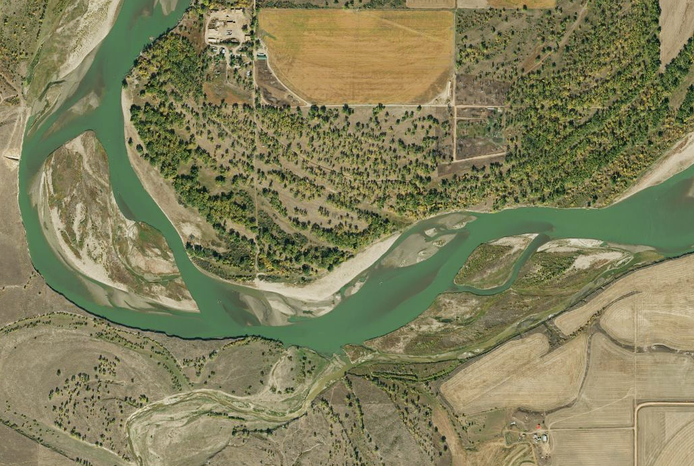

The world is protecting more nature. Is it protecting nature better?

Photograph: U.S. Geological Survey, National Agricultural Imagery Program (approximately 2014), original image and public-domain information. The image illustrates landscape connectivity; it is not a photograph of COP17 or a European restoration site. No USGS endorsement is implied.
The world’s efforts to protect nature have come under renewed scrutiny this week as governments meet in Yerevan, Armenia, for the United Nations biodiversity conference. Four years have passed since countries agreed in Montreal to halt and reverse biodiversity loss by 2030. The first global assessment of that agreement, released ahead of the meeting, offers a mixed account of what has followed.
Nearly 90% of countries have established national biodiversity targets, according to the UN’s State of Biodiversity Action report. This is considerable progress for an agreement involving countries with very different economic and environmental circumstances. The same assessment, however, finds that fewer than half of the national targets assessed by governments are on track. The commitments have spread faster than the changes needed to fulfil them.
Much of the attention has fallen on the promise to conserve at least 30% of the world’s land and waters by 2030. The target has helped give conservation a prominent place in public policy. It has also made progress easier to describe. Governments can report the area of land brought under protection and compare it with what they promised.
The condition of that land is another matter.
A forest may be protected while roads and development gradually separate it from neighbouring habitats. Rivers may pass through conservation areas but remain interrupted by barriers upstream or downstream. For wildlife, the consequences depend on the species concerned. Some animals move readily across altered landscapes; others depend on particular habitats to find food, reproduce or reach new territories.
Scientists have examined the effects of these connections for many years. A 2010 review published in Conservation Biology, drawing on 78 experiments, found that ecological corridors increased movement between habitat patches by about 50% on average. The benefits varied, and better movement does not automatically mean a population will recover. The research nevertheless demonstrated that the arrangement of habitats can influence how animals move through a landscape.
The international biodiversity agreement’s Target 3 recognises this distinction. Its conservation target calls for protected areas to be well-connected, effectively managed and representative of different ecosystems. The problem is therefore not an omission in the agreement itself. It is the difficulty of achieving these objectives once conservation becomes a matter of roads, farms, rivers, settlements and competing demands for land.
Europe has begun addressing some of these issues through its Nature Restoration Regulation. Unlike policies concerned primarily with protecting existing habitats, the regulation also requires measures to improve degraded ecosystems. Its provisions cover forests, agricultural landscapes, wetlands, rivers and coastal areas. One objective is to restore at least 25,000 kilometres of rivers to free-flowing condition by 2030.
The distinction between protection and restoration is important. A legal boundary may prevent further damage to a habitat, but it cannot by itself reverse decades of ecological deterioration. Restoring a river, for example, may require removing barriers, improving water quality and reconsidering how surrounding land is managed. Much of this work takes place outside national parks.
Conservation and the working countryside
In Ireland, hedgerows, streams, small woodlands and patches of semi-natural grassland form part of the agricultural landscape. These features can provide habitats and connections between larger areas of countryside. Their value depends on where they occur, the species using them and the way they are maintained.
A hedgerow linking two woodlands may help certain birds, insects and mammals move between them. Vegetation along a stream can provide habitat and improve conditions beside the watercourse. Such features may occupy relatively little land, although their contribution to conservation can extend beyond their individual boundaries.
Most of these landscapes are managed for purposes other than biodiversity. Farmers use land to produce food, while local authorities maintain roads, drainage systems and other infrastructure. Conservation measures have to operate within these established uses.
There may be opportunities to improve habitats without substantially reducing agricultural production. Other measures can involve additional labour, investment or changes to how land is used. The costs will not be distributed equally, and landowners may differ in their willingness or capacity to undertake them.
This deserves more attention in conservation policy. Where society benefits from ecological improvements on privately managed land, public support can help make those improvements possible. Payments, technical advice and long-term agreements may be necessary, particularly when restoration involves commitments extending beyond a single farming season.
The design of that support matters. Paying for hectares restored or kilometres of hedgerow maintained provides a useful administrative measure, but it does not necessarily establish that wildlife has benefited. Ecological conditions need to be monitored, with enough flexibility to recognise that different habitats and species require different forms of management.
Conservation also raises questions about whose interests are represented when land-use decisions are made. Farmers, rural communities and Indigenous peoples may have knowledge and responsibilities that are not adequately captured in national conservation statistics. Decisions affecting their land and livelihoods require meaningful participation, not simply instructions issued after the objectives have been agreed.
The financing discussions in Armenia are concerned partly with the resources needed to turn international commitments into practical work. Protecting additional land, restoring degraded ecosystems and improving the management of surrounding landscapes all require investment. Governments must also examine incentives that encourage activities harmful to biodiversity.
The 30% target remains valuable. It gives countries a common ambition and a basis for holding governments accountable. But its achievement would not, by itself, establish that the decline of nature had been reversed.
By 2030, conservation authorities may be able to report substantial increases in protected land. The more demanding task will be to establish whether habitats are recovering, whether wildlife can move between them, and whether the arrangements for managing those landscapes can endure.
Those results will tell us more about the state of nature than the area marked for protection on a map.